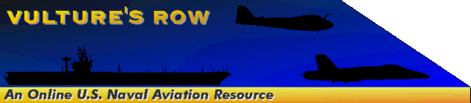

|
aviation pages
 |
| back to hosted aviation pages |
|
|  |
This page has been accessed times. |
Thanks to all of you who have sent me additions, updates, and words of encouragement. Special mention must be made of LT Mike Anderson of VF-41, the World Famous Black Aces; Mark Bathrick, LT Doug Beal (to whom mail kept bouncing, precluding a private thanks -- thanks Doug!); Douglas Beckering; Mark Bovankovich; R. Christopher Bronk; Chris Cavas; Ken Cook; George Cowan, recently of VQ-5; chrisamy@erols.com; Rudy Friederich at the Aircraft Carrier Study Group; LT Rich "Hoonyer" Fields; Sean Fuller, recently of HS-6 "Indians"; LCDR Pete "Griff" Griffiths, of VQ-6; Jan Jacobs, managing editor at The Hook magazine; CDR Tony Kiggins, formerly "Kestrel One" at VFA-137; Scott Kitterman; Vic and Linda Kucera; LT Jim "Chunks" Langham, a RIO formerly of VF-32; Dave Lavictoire; JO2 Lance Lindley; LT Tim McGarvey of VS-29; Peter Murphy; Scott Myers; Tab Pake; LCDR John Parker; LCDR Dave "Hey Joe" Parsons, USN(ret.); Frank "Dancing Bear" Putnam, formerly a RIO at VF-143; C. Ross; J. Sakurai; LCDR Bruce Schneider of VAQ-130; Darryl Shaw; Rich Simcsak; "Socrateaz"; LCDR Hank Teommey, USN (ret.); Robert C. Tindall; Mike Weeks; and Colin Wells for their helpful information and corrections.
Note: If I haven't answered your e-mail sent since my move to the East Coast in late August, please be patient. I suffered a motherboard crash on my desktop computer and had my downloaded mail archives out of reach for six weeks. I'm upgrading the site and will answer all of my email this week. Thanks. -- Robin.
News of Recent F-14 Mishaps
A summary of the recent tragic events involving F-14 aircraft and the results of the 72-hour safety stand-down. Includes updates on preliminary findings of the mishap investigation boards.
Featured Squadron Insignia: VF-32 "Swordsmen"
Vulture's Row periodically features a new carrier squadron insignia, along with some information on the squadron. The third unit in the spotlight is VF-32, flying Tomcats as part of CVW-3. NEW!
"Hoover Hilton"
Photos of the S-3B "Hoover" in action, along with pictures of the USS Abraham Lincoln, submitted by LT Tim McGarvey.
Status of Deployed Aircraft Carriers
Current locations and activities of the nation's deployed aircraft carriers, as released by Navy News. Now includes numbered fleet operational areas. Updated to 1/13.
Current Carrier Air Wing Composition
The squadrons making up the current carrier air wings, including squadron names, aircraft types, tailcodes, and side numbers. Updated to Summer, 1996.
Carrier Battle Group Composition
Composition of the carrier battle groups, after the LANFLT and PACFLT reorganizations announced in 1995.
Hangar Deck
Photographs and profiles of the aircraft in today's air wings.
Air Wing Patches and Insignia Gallery
The insignia of all ten active fleet carrier air wings, along with recently disestablished CVW-15.
Carrier Qualifications
A step-by-step walk-through of a daytime carrier launch and landing in an F-14.
Air-to-air victories in Desert Storm
Coalition air-to-air kills, along with serial numbers, units, and ordnance used. Now updated with aircraft callsigns and credited pilots.
Coalition air combat attrition in Desert Storm
Coalition losses and combat damage, sorted by unit, location, and cause.
Air-Delivered Munitions in Desert Storm
A summary of all munitions delivered by USAF, USN, and USMC aircraft during Desert Storm, including numbers expended, unit costs, and total costs in FY 1991 US dollars.
Other Related Links
Other military aviation links on the net.